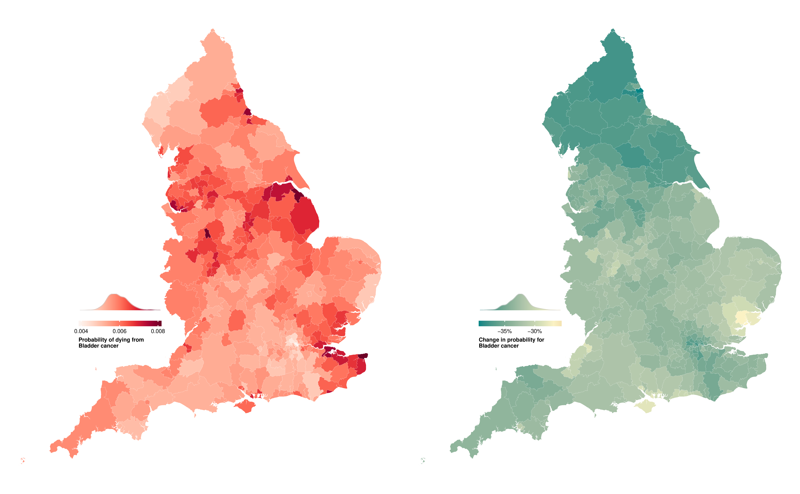
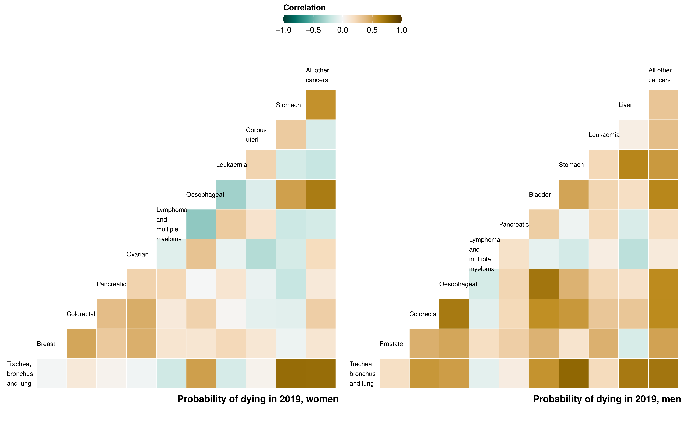
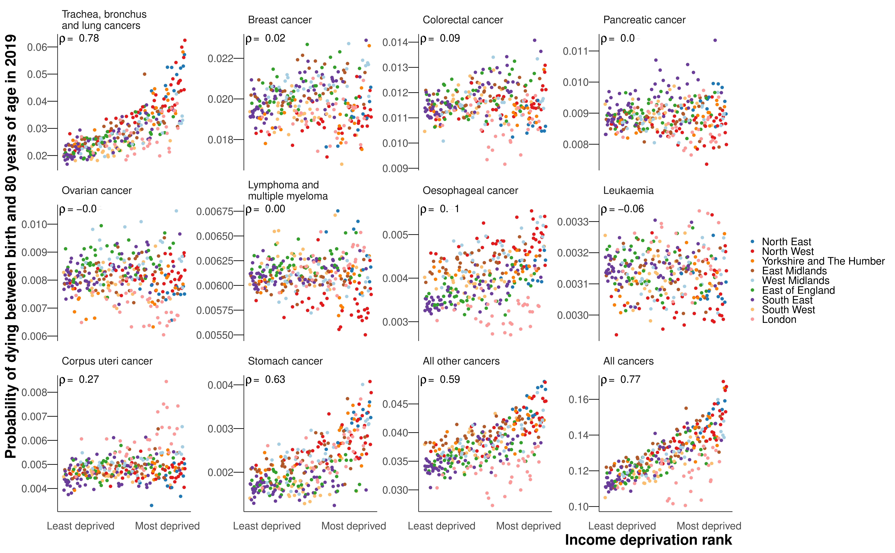

8 Trends in cancer mortality at the district level
Cancers accounted for 28.5% of all deaths. With over 150 different types of cancer, each with their own anatomical and molecular subtypes, cancer is extremely complex, with a specialist workforce dedicated to each unique cancer. Compared with CVDs and NCDs, which are dominated by their major causes (ischaemic heart disease and stroke, and Alzheimer’s, COPD and diabetes, respectively), cancers have the largest number of individual causes in the top 12. I felt I should go deeper into the cancer story, and pay further attention to a wider variety of site-specific cancers.
The work in the chapter has recently been submitted for publication, where I am first author.
8.1 Methods
The methodology for this section if the same as Chapter 7, but I have stratified cancer groups further. I used the top ten leading cancer causes of death according to the total number of deaths from 2002 to 2019 for cause-specific analysis, as well as a residual group comprising all other cancer deaths. As a result, the residual group in this chapter is smaller than in Chapter 7. The full list of ICD-10 codes for each cause group can be found in Table D.2.
I ran a model for a combined group of all cancer deaths, which resulted in near-identical median estimates of probability of dying to those created by summing the age-district-year-cause specific death rates over all the cancer groups (correlation coefficient across all years 0.99 for both sexes). I present results from the model as the credible intervals are directly estimated.
The primary reporting outcome is, again, the unconditional probability of dying between birth and 80 years of age. I also report the mean age at death among those who died of that cause. Details on the calculations for both the probability of dying and the mean age at death can be found in Appendix A.
8.2 Results
INSERT PAPER RESULTS
8.2.1 All cancers


8.2.2 Geography and change of site-specific cancers



8.2.3 Correlation and relation to deprivation of site-specific cancers




| Cancer | Women | Men |
|---|---|---|
| Trachea, bronchus and lung cancers | 0.78 | 0.87 |
| Breast cancer | 0.02 | |
| Prostate cancer | 0.17 | |
| Colorectal cancer | 0.09 | 0.45 |
| Pancreatic cancer | 0.04 | -0.01 |
| Ovarian cancer | -0.04 | |
| Lymphomas, multiple myeloma | 0.00 | -0.07 |
| Oesophageal cancer | 0.41 | 0.48 |
| Bladder cancer | 0.46 | |
| Leukaemia | -0.06 | 0.18 |
| Corpus uteri cancer | 0.27 | |
| Stomach cancer | 0.63 | 0.68 |
| Liver cancer | 0.65 | |
| All other cancers | 0.59 | 0.62 |
| All cancers | 0.77 | 0.82 |
8.2.4 Change


Ranked change in probability of dying between birth and 80 years of age in 314 local authority districts in England in 2002 and 2019 for the ten leading cancers.
8.3 Discussion
INSERT PAPER DISCUSSION
Steel et al. (2018) The authors also singled out London’s low mortality for deprivation, which could be low risk factors (particularly tobacco and dietary risks), high educational performance, access to health services, or deprivation indicator itself.